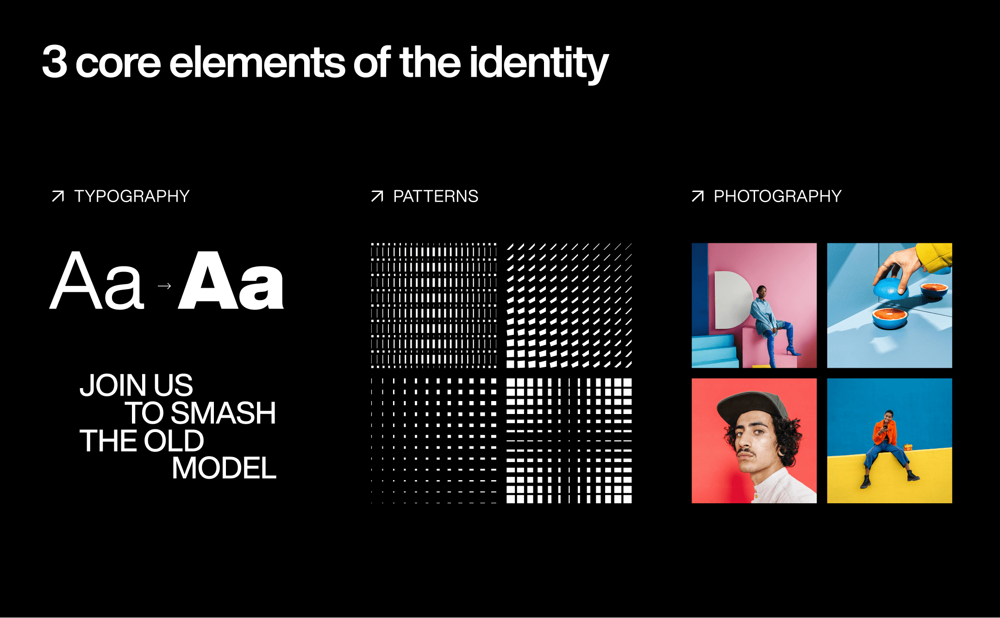
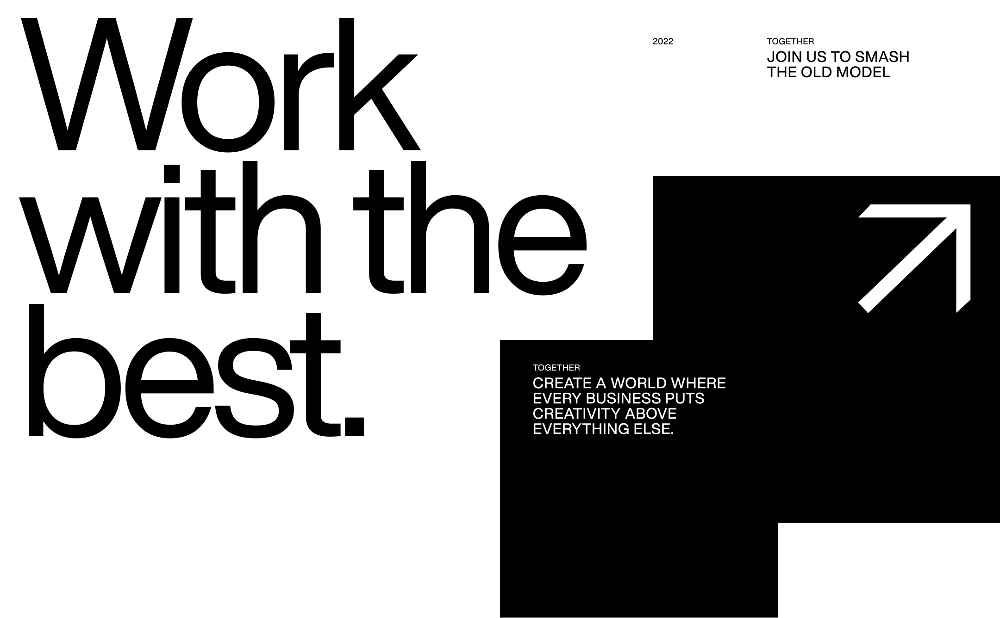
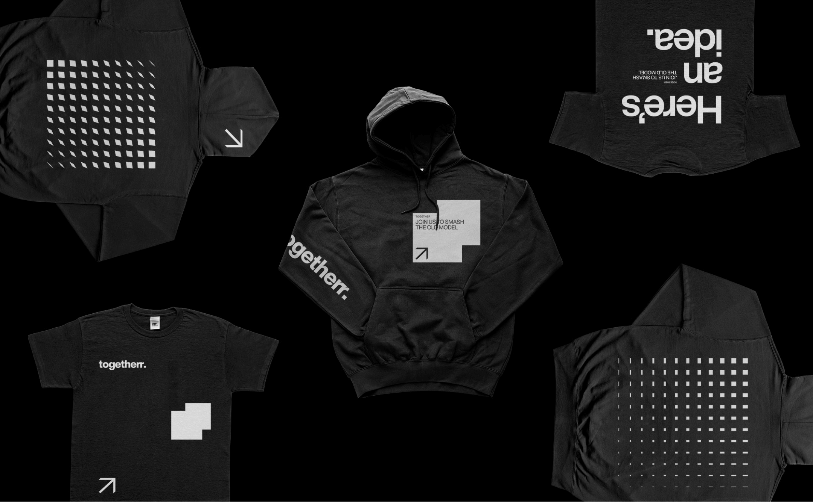
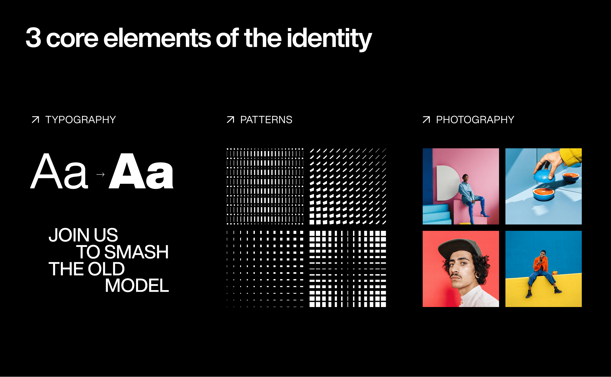
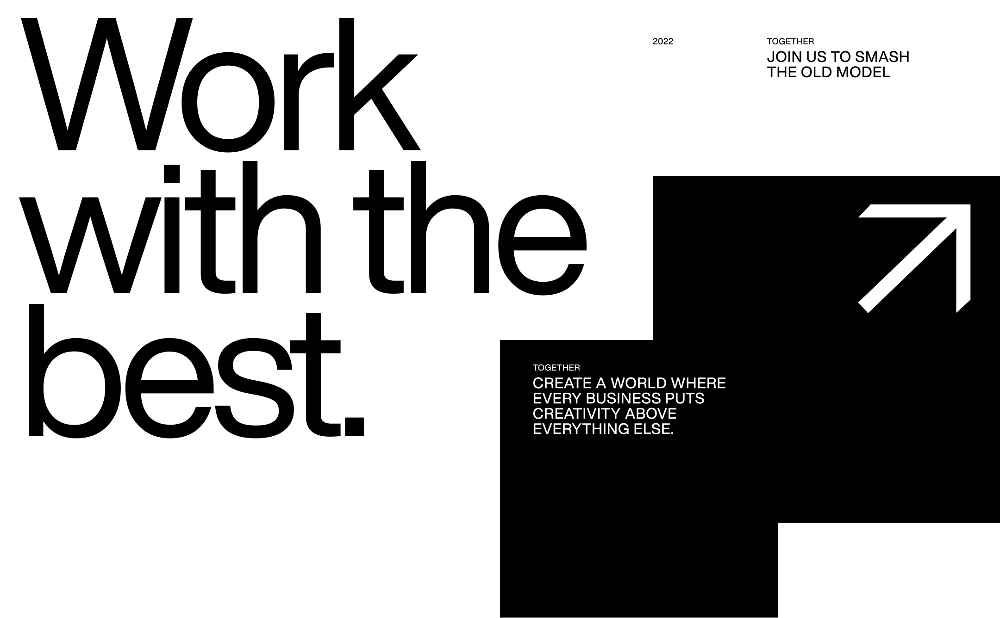
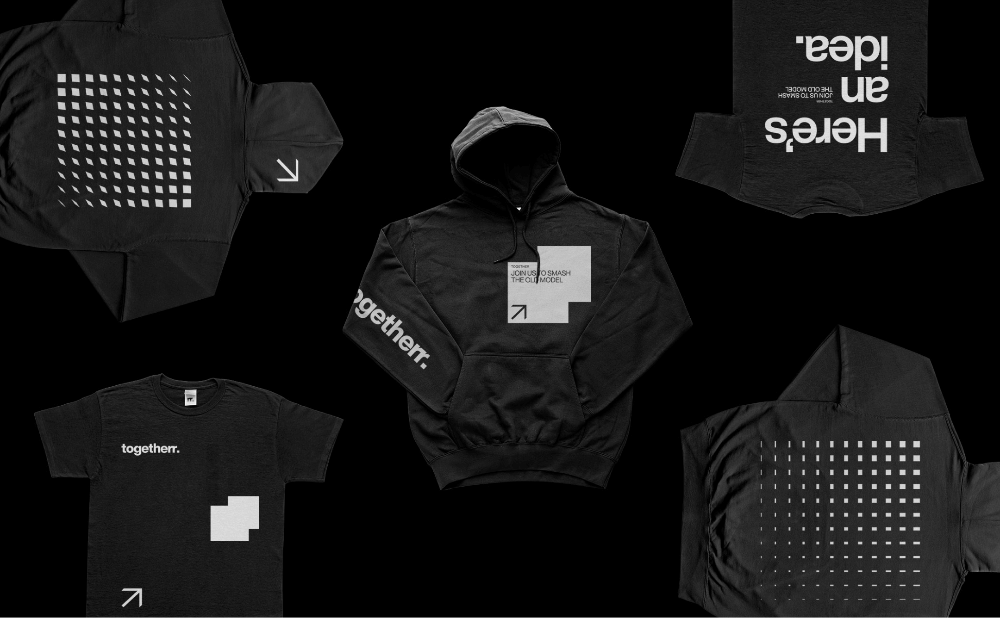
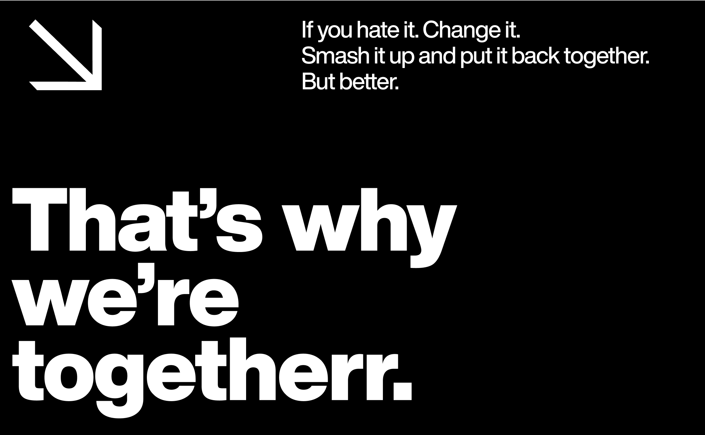
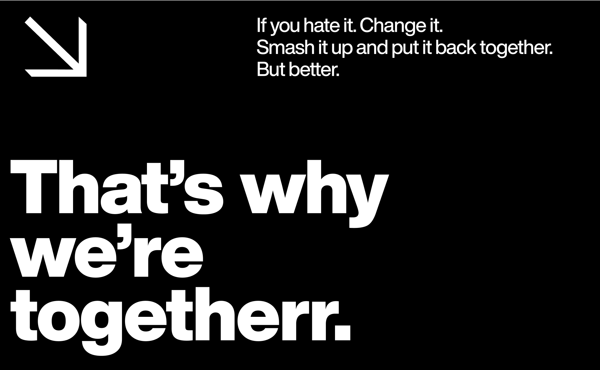

togetherr
togetherr approached us to help them develop an identity for a platform that will match teams of marketing professionals to brand projects worldwide. In other words, it enables creative minds to own their creativity.
togetherr is the new platform built by Fiverr and leaders in the creative industry with a mission to change how brands and creatives collaborate.
togetherr’s brand speaks first and foremost to creatives, people whose enemies are system, complexity, lack of bravery, excitement, and time. That’s why their communication is bold and straightforward, with no BS.
The design toolkit we chose for them is limited, but within it, we could go as crazy or as minimal as we need to. The identity is based on a black and white color palette and Helvetica Now, a new take on a classic font associated with the advertising world. We honored it by making it the heart of our visual language. The color comes in through the work of the creatives, giving them space and respect. We added patterns based on a square that ties them with the logo.
Full website | togetherr.com/
Client | togetherr by Fiverr
togetherr Design team | Nadav Barkan, Alex Leibo, Or Harel, Amir Guy, Tamar Reshef Bezalel
Brand development | Under, Inbal Lapidot Vidal, Anastasia Vlasenko

 







 
